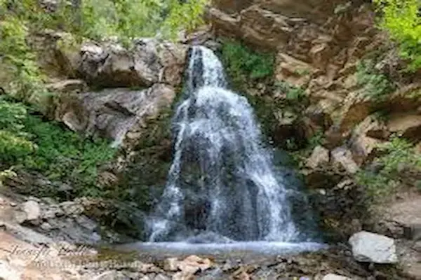
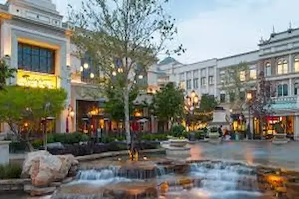
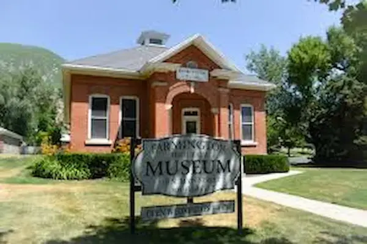

Discover Farmington
Locale History
Nestled between the Wasatch Mountains and the Great Salt Lake, Farmington, Utah has grown from a pioneer settlement into a thriving city that blends small-town charm with modern recreation, shopping, and family life.
Current Events
See the Sights


